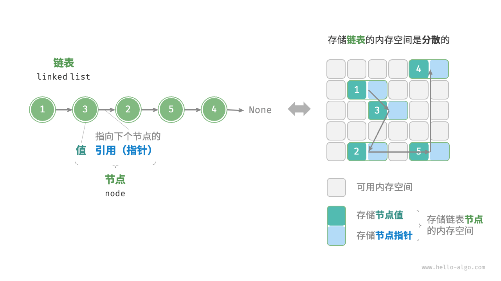

链表
内存空间是所有程序的公共资源，在一个复杂的系统运行环境下，空闲的内存空间可能散落在内存各处。我们知道，存储数组的内存空间必须是连续的，而当数组非常大时，内存可能无法提供如此大的连续空间。此时链表的灵活性优势就体现出来了。
「链表 linked list」是一种线性数据结构，其中的每个元素都是一个节点对象，各个节点通过“引用”相连接。引用记录了下一个节点的内存地址，通过它可以从当前节点访问到下一个节点。
链表的设计使得各个节点可以分散存储在内存各处，它们的内存地址无须连续。

观察上图，链表的组成单位是「节点 node」对象。每个节点都包含两项数据：节点的“值”和指向下一节点的“引用”。
- 链表的首个节点被称为“头节点”，最后一个节点被称为“尾节点”。
- 尾节点指向的是“空”，它在 Java、C++ 和 Python 中分别被记为
null、nullptr和None。 - 在 C、C++、Go 和 Rust 等支持指针的语言中，上述“引用”应被替换为“指针”。
如以下代码所示，链表节点 ListNode 除了包含值，还需额外保存一个引用（指针）。因此在相同数据量下，链表比数组占用更多的内存空间。
"Python"
```python title="" class ListNode:
"""链表节点类""" def __init__(self, val: int): self.val: int = val // 节点值 self.next: ListNode | None = None// 指向下一节点的引用```
"C++"
```cpp title="" / 链表节点结构体 / struct ListNode {
int val; // 节点值 ListNode *next; // 指向下一节点的指针 ListNode(int x) : val(x), next(nullptr) {} // 构造函数}; ```
"Java"
```java title="" / 链表节点类 / class ListNode {
int val; // 节点值 ListNode next; // 指向下一节点的引用 ListNode(int x) { val = x; } // 构造函数} ```
"C#"
```csharp title="" / 链表节点类 / class ListNode(int x) { //构造函数
int val = x; // 节点值 ListNode? next; // 指向下一节点的引用} ```
"Go"
```go title="" / 链表节点结构体 / type ListNode struct {
Val int // 节点值 Next *ListNode // 指向下一节点的指针}
// NewListNode 构造函数，创建一个新的链表 func NewListNode(val int) *ListNode {
return &ListNode{ Val: val, Next: nil, }} ```
"Swift"
```swift title="" / 链表节点类 / class ListNode {
var val: Int // 节点值 var next: ListNode? // 指向下一节点的引用 init(x: Int) { // 构造函数 val = x }} ```
"JS"
```javascript title="" / 链表节点类 / class ListNode {
constructor(val, next) { this.val = (val - undefined ? 0 : val); // 节点值 this.next = (next - undefined ? null : next); // 指向下一节点的引用 }} ```
"TS"
```typescript title="" / 链表节点类 / class ListNode {
val: number; next: ListNode | null; constructor(val?: number, next?: ListNode | null) { this.val = val - undefined ? 0 : val; // 节点值 this.next = next - undefined ? null : next; // 指向下一节点的引用 }} ```
"Dart"
```dart title="" / 链表节点类 / class ListNode {
int val; // 节点值 ListNode? next; // 指向下一节点的引用 ListNode(this.val, [this.next]); // 构造函数} ```
"Rust"
```rust title="" use std::rc::Rc; use std::cell::RefCell; / 链表节点类 /
[derive(Debug)]
struct ListNode {
val: i32, // 节点值 next: Option<Rc<RefCell<ListNode>>>, // 指向下一节点的指针} ```
"C"
```c title="" / 链表节点结构体 / typedef struct ListNode {
int val; // 节点值 struct ListNode *next; // 指向下一节点的指针} ListNode;
/ 构造函数 / ListNode *newListNode(int val) {
ListNode *node; node = (ListNode *) malloc(sizeof(ListNode)); node->val = val; node->next = NULL; return node;} ```
"Zig"
```zig title="" // 链表节点类 pub fn ListNode(comptime T: type) type {
return struct { const Self = @This(); val: T = 0, // 节点值 next: ?*Self = null, // 指向下一节点的指针 // 构造函数 pub fn init(self: *Self, x: i32) void { self.val = x; self.next = null; } };} ```
链表常用操作
初始化链表
建立链表分为两步，第一步是初始化各个节点对象，第二步是构建节点之间的引用关系。初始化完成后，我们就可以从链表的头节点出发，通过引用指向 next 依次访问所有节点。
"Python"
python title="linked_list.py" // 初始化链表 1 -> 3 -> 2 -> 5 -> 4 // 初始化各个节点 n0 = ListNode(1) n1 = ListNode(3) n2 = ListNode(2) n3 = ListNode(5) n4 = ListNode(4) // 构建节点之间的引用 n0.next = n1 n1.next = n2 n2.next = n3 n3.next = n4"C++"
cpp title="linked_list.cpp" /* 初始化链表 1 -> 3 -> 2 -> 5 -> 4 */ // 初始化各个节点 ListNode* n0 = new ListNode(1); ListNode* n1 = new ListNode(3); ListNode* n2 = new ListNode(2); ListNode* n3 = new ListNode(5); ListNode* n4 = new ListNode(4); // 构建节点之间的引用 n0->next = n1; n1->next = n2; n2->next = n3; n3->next = n4;"Java"
java title="linked_list.java" /* 初始化链表 1 -> 3 -> 2 -> 5 -> 4 */ // 初始化各个节点 ListNode n0 = new ListNode(1); ListNode n1 = new ListNode(3); ListNode n2 = new ListNode(2); ListNode n3 = new ListNode(5); ListNode n4 = new ListNode(4); // 构建节点之间的引用 n0.next = n1; n1.next = n2; n2.next = n3; n3.next = n4;"C#"
csharp title="linked_list.cs" /* 初始化链表 1 -> 3 -> 2 -> 5 -> 4 */ // 初始化各个节点 ListNode n0 = new(1); ListNode n1 = new(3); ListNode n2 = new(2); ListNode n3 = new(5); ListNode n4 = new(4); // 构建节点之间的引用 n0.next = n1; n1.next = n2; n2.next = n3; n3.next = n4;"Go"
go title="linked_list.go" /* 初始化链表 1 -> 3 -> 2 -> 5 -> 4 */ // 初始化各个节点 n0 := NewListNode(1) n1 := NewListNode(3) n2 := NewListNode(2) n3 := NewListNode(5) n4 := NewListNode(4) // 构建节点之间的引用 n0.Next = n1 n1.Next = n2 n2.Next = n3 n3.Next = n4"Swift"
swift title="linked_list.swift" /* 初始化链表 1 -> 3 -> 2 -> 5 -> 4 */ // 初始化各个节点 let n0 = ListNode(x: 1) let n1 = ListNode(x: 3) let n2 = ListNode(x: 2) let n3 = ListNode(x: 5) let n4 = ListNode(x: 4) // 构建节点之间的引用 n0.next = n1 n1.next = n2 n2.next = n3 n3.next = n4"JS"
javascript title="linked_list.js" /* 初始化链表 1 -> 3 -> 2 -> 5 -> 4 */ // 初始化各个节点 const n0 = new ListNode(1); const n1 = new ListNode(3); const n2 = new ListNode(2); const n3 = new ListNode(5); const n4 = new ListNode(4); // 构建节点之间的引用 n0.next = n1; n1.next = n2; n2.next = n3; n3.next = n4;"TS"
typescript title="linked_list.ts" /* 初始化链表 1 -> 3 -> 2 -> 5 -> 4 */ // 初始化各个节点 const n0 = new ListNode(1); const n1 = new ListNode(3); const n2 = new ListNode(2); const n3 = new ListNode(5); const n4 = new ListNode(4); // 构建节点之间的引用 n0.next = n1; n1.next = n2; n2.next = n3; n3.next = n4;"Dart"
dart title="linked_list.dart" /* 初始化链表 1 -> 3 -> 2 -> 5 -> 4 */\ // 初始化各个节点 ListNode n0 = ListNode(1); ListNode n1 = ListNode(3); ListNode n2 = ListNode(2); ListNode n3 = ListNode(5); ListNode n4 = ListNode(4); // 构建节点之间的引用 n0.next = n1; n1.next = n2; n2.next = n3; n3.next = n4;"Rust"
```rust title="linked_list.rs" / 初始化链表 1 -> 3 -> 2 -> 5 -> 4 / // 初始化各个节点 let n0 = Rc::new(RefCell::new(ListNode { val: 1, next: None })); let n1 = Rc::new(RefCell::new(ListNode { val: 3, next: None })); let n2 = Rc::new(RefCell::new(ListNode { val: 2, next: None })); let n3 = Rc::new(RefCell::new(ListNode { val: 5, next: None })); let n4 = Rc::new(RefCell::new(ListNode { val: 4, next: None }));
// 构建节点之间的引用 n0.borrow_mut().next = Some(n1.clone()); n1.borrow_mut().next = Some(n2.clone()); n2.borrow_mut().next = Some(n3.clone()); n3.borrow_mut().next = Some(n4.clone()); ```
"C"
c title="linked_list.c" /* 初始化链表 1 -> 3 -> 2 -> 5 -> 4 */ // 初始化各个节点 ListNode* n0 = newListNode(1); ListNode* n1 = newListNode(3); ListNode* n2 = newListNode(2); ListNode* n3 = newListNode(5); ListNode* n4 = newListNode(4); // 构建节点之间的引用 n0->next = n1; n1->next = n2; n2->next = n3; n3->next = n4;"Zig"
zig title="linked_list.zig" // 初始化链表 // 初始化各个节点 var n0 = inc.ListNode(i32){.val = 1}; var n1 = inc.ListNode(i32){.val = 3}; var n2 = inc.ListNode(i32){.val = 2}; var n3 = inc.ListNode(i32){.val = 5}; var n4 = inc.ListNode(i32){.val = 4}; // 构建节点之间的引用 n0.next = &n1; n1.next = &n2; n2.next = &n3; n3.next = &n4;
数组整体是一个变量，比如数组 nums 包含元素 nums[0] 和 nums[1] 等，而链表是由多个独立的节点对象组成的。我们通常将头节点当作链表的代称，比如以上代码中的链表可记作链表 n0 。
插入节点
在链表中插入节点非常容易。如下图所示，假设我们想在相邻的两个节点 n0 和 n1 之间插入一个新节点 P ，则只需改变两个节点引用（指针）即可，时间复杂度为 $O(1)$ 。
相比之下，在数组中插入元素的时间复杂度为 $O(n)$ ，在大数据量下的效率较低。
"Python"
def insert(n0: ListNode, P: ListNode): """在链表的节点 n0 之后插入节点 P""" n1 = n0.next P.next = n1 n0.next = P"C++"
/* 在链表的节点 n0 之后插入节点 P */ void insert(ListNode *n0, ListNode *P) { ListNode *n1 = n0->next; P->next = n1; n0->next = P; }"Java"
/* 在链表的节点 n0 之后插入节点 P */ void insert(ListNode n0, ListNode P) { ListNode n1 = n0.next; P.next = n1; n0.next = P; }
删除节点
如下图所示，在链表中删除节点也非常方便，只需改变一个节点的引用（指针）即可。
请注意，尽管在删除操作完成后节点 P 仍然指向 n1 ，但实际上遍历此链表已经无法访问到 P ，这意味着 P 已经不再属于该链表了。
"Python"
def remove(n0: ListNode): """删除链表的节点 n0 之后的首个节点""" if not n0.next: return // n0 -> P -> n1 P = n0.next n1 = P.next n0.next = n1"C++"
/* 删除链表的节点 n0 之后的首个节点 */ void remove(ListNode *n0) { if (n0->next == nullptr) return; // n0 -> P -> n1 ListNode *P = n0->next; ListNode *n1 = P->next; n0->next = n1; // 释放内存 delete P; }"Java"
/* 删除链表的节点 n0 之后的首个节点 */ void remove(ListNode n0) { if (n0.next == null) return; // n0 -> P -> n1 ListNode P = n0.next; ListNode n1 = P.next; n0.next = n1; }
访问节点
在链表中访问节点的效率较低。如上一节所述，我们可以在 $O(1)$ 时间下访问数组中的任意元素。链表则不然，程序需要从头节点出发，逐个向后遍历，直至找到目标节点。也就是说，访问链表的第 $i$ 个节点需要循环 $i - 1$ 轮，时间复杂度为 $O(n)$ 。
"Python"
def access(head: ListNode, index: int) -> ListNode | None: """访问链表中索引为 index 的节点""" for _ in range(index): if not head: return None head = head.next return head"C++"
/* 访问链表中索引为 index 的节点 */ ListNode *access(ListNode *head, int index) { for (int i = 0; i < index; i++) { if (head == nullptr) return nullptr; head = head->next; } return head; }"Java"
/* 访问链表中索引为 index 的节点 */ ListNode access(ListNode head, int index) { for (int i = 0; i < index; i++) { if (head == null) return null; head = head.next; } return head; }
查找节点
遍历链表，查找其中值为 target 的节点，输出该节点在链表中的索引。此过程也属于线性查找。代码如下所示：
"Python"
def find(head: ListNode, target: int) -> int: """在链表中查找值为 target 的首个节点""" index = 0 while head: if head.val == target: return index head = head.next index += 1 return -1"C++"
/* 在链表中查找值为 target 的首个节点 */ int find(ListNode *head, int target) { int index = 0; while (head != nullptr) { if (head->val == target) return index; head = head->next; index++; } return -1; }"Java"
/* 在链表中查找值为 target 的首个节点 */ int find(ListNode head, int target) { int index = 0; while (head != null) { if (head.val == target) return index; head = head.next; index++; } return -1; }
数组 vs. 链表
下表总结了数组和链表的各项特点并对比了操作效率。由于它们采用两种相反的存储策略，因此各种性质和操作效率也呈现对立的特点。
表
| 数组 | 链表 | |
|---|---|---|
| 存储方式 | 连续内存空间 | 分散内存空间 |
| 容量扩展 | 长度不可变 | 可灵活扩展 |
| 内存效率 | 元素占用内存少、但可能浪费空间 | 元素占用内存多 |
| 访问元素 | $O(1)$ | $O(n)$ |
| 添加元素 | $O(n)$ | $O(1)$ |
| 删除元素 | $O(n)$ | $O(1)$ |
常见链表类型
如下图所示，常见的链表类型包括三种。
- 单向链表：即前面介绍的普通链表。单向链表的节点包含值和指向下一节点的引用两项数据。我们将首个节点称为头节点，将最后一个节点称为尾节点，尾节点指向空
None。 - 环形链表：如果我们令单向链表的尾节点指向头节点（首尾相接），则得到一个环形链表。在环形链表中，任意节点都可以视作头节点。
双向链表：与单向链表相比，双向链表记录了两个方向的引用。双向链表的节点定义同时包含指向后继节点（下一个节点）和前驱节点（上一个节点）的引用（指针）。相较于单向链表，双向链表更具灵活性，可以朝两个方向遍历链表，但相应地也需要占用更多的内存空间。
"Python"
```python title="" class ListNode:
"""双向链表节点类""" def __init__(self, val: int): self.val: int = val // 节点值 self.next: ListNode | None = None // 指向后继节点的引用 self.prev: ListNode | None = None // 指向前驱节点的引用```
"C++"
```cpp title="" / 双向链表节点结构体 / struct ListNode {
int val; // 节点值 ListNode *next; // 指向后继节点的指针 ListNode *prev; // 指向前驱节点的指针 ListNode(int x) : val(x), next(nullptr), prev(nullptr) {} // 构造函数}; ```
"Java"
```java title="" / 双向链表节点类 / class ListNode {
int val; // 节点值 ListNode next; // 指向后继节点的引用 ListNode prev; // 指向前驱节点的引用 ListNode(int x) { val = x; } // 构造函数} ```
"C#"
```csharp title="" / 双向链表节点类 / class ListNode(int x) { // 构造函数
int val = x; // 节点值 ListNode next; // 指向后继节点的引用 ListNode prev; // 指向前驱节点的引用} ```
"Go"
```go title="" / 双向链表节点结构体 / type DoublyListNode struct {
Val int // 节点值 Next *DoublyListNode // 指向后继节点的指针 Prev *DoublyListNode // 指向前驱节点的指针}
// NewDoublyListNode 初始化 func NewDoublyListNode(val int) *DoublyListNode {
return &DoublyListNode{ Val: val, Next: nil, Prev: nil, }} ```
"Swift"
```swift title="" / 双向链表节点类 / class ListNode {
var val: Int // 节点值 var next: ListNode? // 指向后继节点的引用 var prev: ListNode? // 指向前驱节点的引用 init(x: Int) { // 构造函数 val = x }} ```
"JS"
```javascript title="" / 双向链表节点类 / class ListNode {
constructor(val, next, prev) { this.val = val - undefined ? 0 : val; // 节点值 this.next = next - undefined ? null : next; // 指向后继节点的引用 this.prev = prev - undefined ? null : prev; // 指向前驱节点的引用 }} ```
"TS"
```typescript title="" / 双向链表节点类 / class ListNode {
val: number; next: ListNode | null; prev: ListNode | null; constructor(val?: number, next?: ListNode | null, prev?: ListNode | null) { this.val = val - undefined ? 0 : val; // 节点值 this.next = next - undefined ? null : next; // 指向后继节点的引用 this.prev = prev - undefined ? null : prev; // 指向前驱节点的引用 }} ```
"Dart"
```dart title="" / 双向链表节点类 / class ListNode {
int val; // 节点值 ListNode next; // 指向后继节点的引用 ListNode prev; // 指向前驱节点的引用 ListNode(this.val, [this.next, this.prev]); // 构造函数} ```
"Rust"
```rust title="" use std::rc::Rc; use std::cell::RefCell;
/ 双向链表节点类型 /
[derive(Debug)]
struct ListNode {
val: i32, // 节点值 next: Option<Rc<RefCell<ListNode>>>, // 指向后继节点的指针 prev: Option<Rc<RefCell<ListNode>>>, // 指向前驱节点的指针}
/ 构造函数 / impl ListNode {
fn new(val: i32) -> Self { ListNode { val, next: None, prev: None, } }} ```
"C"
```c title="" / 双向链表节点结构体 / typedef struct ListNode {
int val; // 节点值 struct ListNode *next; // 指向后继节点的指针 struct ListNode *prev; // 指向前驱节点的指针} ListNode;
/ 构造函数 / ListNode *newListNode(int val) {
ListNode *node; node = (ListNode *) malloc(sizeof(ListNode)); node->val = val; node->next = NULL; node->prev = NULL; return node;} ```
"Zig"
```zig title="" // 双向链表节点类 pub fn ListNode(comptime T: type) type {
return struct { const Self = @This(); val: T = 0, // 节点值 next: ?*Self = null, // 指向后继节点的指针 prev: ?*Self = null, // 指向前驱节点的指针 // 构造函数 pub fn init(self: *Self, x: i32) void { self.val = x; self.next = null; self.prev = null; } };} ```

链表典型应用
单向链表通常用于实现栈、队列、哈希表和图等数据结构。
- 栈与队列：当插入和删除操作都在链表的一端进行时，它表现出先进后出的特性，对应栈；当插入操作在链表的一端进行，删除操作在链表的另一端进行，它表现出先进先出的特性，对应队列。
- 哈希表：链式地址是解决哈希冲突的主流方案之一，在该方案中，所有冲突的元素都会被放到一个链表中。
- 图：邻接表是表示图的一种常用方式，其中图的每个顶点都与一个链表相关联，链表中的每个元素都代表与该顶点相连的其他顶点。
双向链表常用于需要快速查找前一个和后一个元素的场景。
- 高级数据结构：比如在红黑树、B 树中，我们需要访问节点的父节点，这可以通过在节点中保存一个指向父节点的引用来实现，类似于双向链表。
- 浏览器历史：在网页浏览器中，当用户点击前进或后退按钮时，浏览器需要知道用户访问过的前一个和后一个网页。双向链表的特性使得这种操作变得简单。
- LRU 算法：在缓存淘汰（LRU）算法中，我们需要快速找到最近最少使用的数据，以及支持快速添加和删除节点。这时候使用双向链表就非常合适。
环形链表常用于需要周期性操作的场景，比如操作系统的资源调度。
- 时间片轮转调度算法：在操作系统中，时间片轮转调度算法是一种常见的 CPU 调度算法，它需要对一组进程进行循环。每个进程被赋予一个时间片，当时间片用完时，CPU 将切换到下一个进程。这种循环操作可以通过环形链表来实现。
- 数据缓冲区：在某些数据缓冲区的实现中，也可能会使用环形链表。比如在音频、视频播放器中，数据流可能会被分成多个缓冲块并放入一个环形链表，以便实现无缝播放。